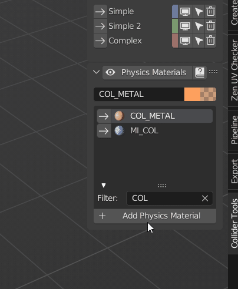
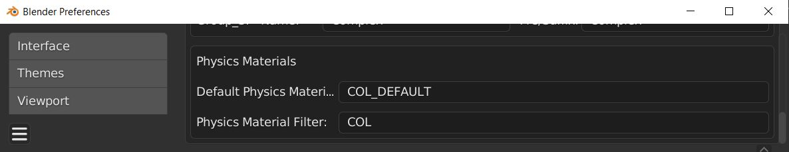

Physics Materials
Some engines support physics materials for colliders. They can be used to differentiate different materials on impact and trigger different sound effects, or VFX based on the materials (e.g., different footprints and step sounds based on the ground material)
Collider Tools uses Blenders internal material system to specify the physics materials. You can specify the physics material used from a drop-down menu in the properties panel. Further, you can specify a filter. E.g., you can filter all materials that contain the string "COL_". Only materials that contain "COL_" in their name will be shown in the drop-down menu. You can also change the material later on like for any regular mesh object.
New physics materials can be created with the Add Physics Material button. This creates a regular material. The advantage of creating it from here is that you can directly set the name and color.

Default settings for physics material are set in the preferences in the Presets tab. They are saved and loaded with all other preset settings. A default material with the here specified name is created when blender gets started.

Toggle Physics Material and Collider Group display